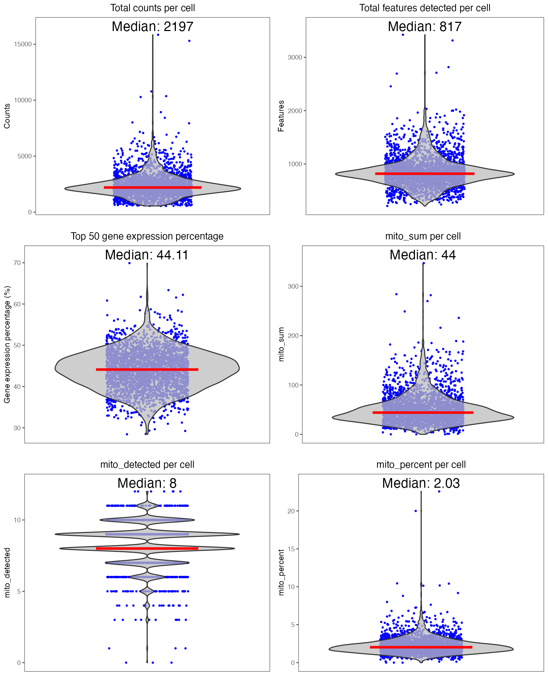
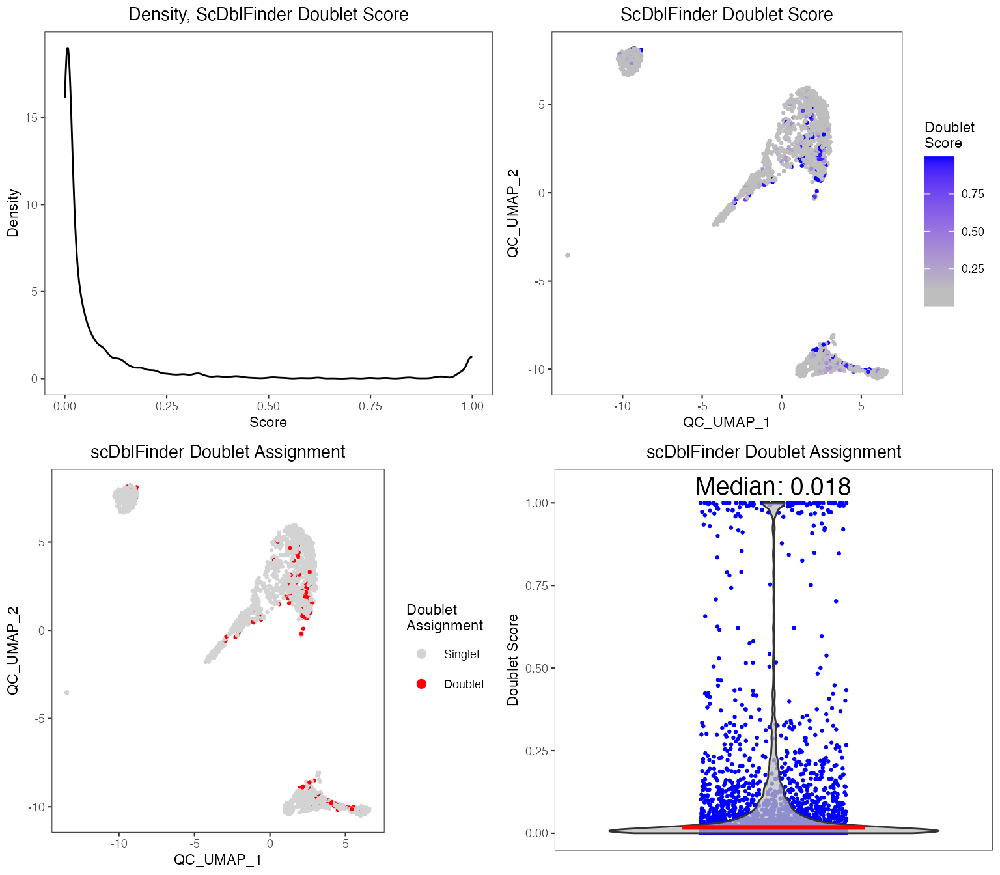
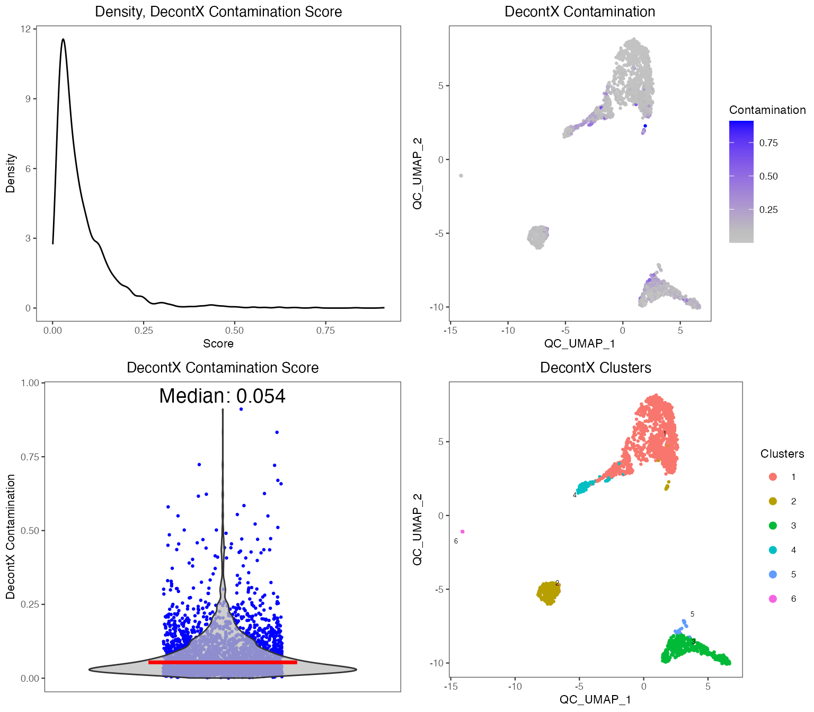

Importing and Quality Control Tutorial - PBMC3K
Yichen Wang
Source:vignettes/articles/01_import_and_qc_tutorial.Rmd
01_import_and_qc_tutorial.RmdIntroduction
Single Cell Toolkit (singleCellTK, SCTK) is a package that works on single-cell RNA-seq (scRNAseq) dataset. SCTK allows users to import multiple datasets, perform quality control and a series of preprocessing, get clustering on cells and markers of clusters, and run various downstream analysis. Meanwhile, SCTK also wraps curated workflows for celda and Seurat.
The SCTK tutorial series start from importing, QC and filtering. After this, users can go through either the A La Carte Workflow or the Curated Workflows (Seurat or Celda). These tutorials will take the real-world scRNAseq dataset as an example, which consists of 2,700 Peripheral Blood Mononuclear Cells (PBMCs) collected from a healthy donor, namingly PBMC3K. This dataset is available from 10X Genomics and can be found on the 10X website.
Before starting the analysis from either UI or console, users should
have SCTK properly installed first. Please refer to the Installation documentation for detail of
installing the singleCellTK package and relevant
dependencies. Alternatively, users can also access the functionality by
visiting our online web
server deployment https://sctk.bu.edu/, or using a stand-alone docker image.
Importing Data
SCTK allows importing dataset from various type of sources, such as preprocessing tools like cellranger or flat text files. SCTK also allows importing multiple batches (samples) of dataset at the same time. Please refer to the detailed documentation of Importing for different ways of importing. This tutorial only shows how we can import the example PBMC3K data.
After starting the UI, the landing page will be for importing the scRNAseq data. To import the PBMC3K dataset previously mentioned, users should follow these steps:

- If you are not already at the starting import page, you start by going to the Data tab and selecting the Import Single Cell Data option (2).

- Select the relevant way to import data. For the purpose of this example, we use pbmc3k filtered raw data using the CellRanger option. This data can be downloaded from here.

- In the appropriate input boxes, we select the matrix, feature and barcode files and upload each sample individually by giving a unique sample name (5).

- Now either import samples or Add one more sample. You can keep adding more samples until all samples have been added and then finally import all of them together.

After successfully importing, the third collapse box will pop up and
show users the basic summary stats of the imported dataset. Meanwhile,
users can set feature display options here. Most of the time, the
dataset has default feature ID (usually seen as row names of a matrix)
together with other types of ID (e.g. symbol) in the feature metadata.
The first option “Set feature ID” sets the type of
default feature ID, which should be unique and has no NA
value. The second option “Set feature names to be displayed in
downstream visualization” does what it says. When we need to
show features on a plot, such as a heatmap or a volcano plot, usually it
is better to show gene symbols rather than ensembl IDs.
Here we use importExampleData() to load PBMC3k data from
the Bioconductor package TENxPBMCData.
library(singleCellTK)
sce <- importExampleData("pbmc3k")An SingleCellExperiment
(SCE) object is returned as the data container. An SCE object is
designed for storing and manipulating expression matrices, gene/cell
metadata, low-dimension representation and unstructured information. All
the methods wrapped by SCTK will be performed on the SCE object.
Importing CellRanger Output Data
Here, we briefly introduce the approach to importing the output of
the widely used preprocessing tool, cellranger. SCTK has a
generic function importCellRanger() for this purpose, and,
explicitly, importCellRangerV2() and
importCellRangerV3() for different versions of
cellranger. For the detail of these functions, please click
on the function names to be redirected to the reference page.
The input arguments basically asks users what the exact paths of the
input data files are (i.e. "matrix.mtx",
"features.tsv", and "barcodes.tsv"). They are
cellRangerDirs, sampleDirs,
cellRangerOuts, matrixFileNames,
featuresFileNames and barcodesFileNames. And
the function will identify the specified path, for example, of the
barcode file, as a combination of:
{cellRangerDirs}/{sampleDirs}/{cellRangerOuts}/{barcodesFileNames}.
Theses functions automatically try to recognize a preset substucture of
cellRangerDirs, so that in most of the cases, users only
need to specify cellRangerDirs to tell where the top level
directory of the output is. However, sometimes the three essential files
may be placed or named in a different way and the default detection
method won’t find them. In this case, users will need to check the exact
paths and manually specify the correct input according to the
combination rule above and the error messages.
An example folder structure:
./datasets/
sample1/
outs/filtered_feature_bc_matrix/
barcodes.tsv.gz
features.tsv.gz
matrix.mtx.gz
sample2/
outs/filtered_feature_bc_matrix/
barcodes.tsv.gz
features.tsv.gz
matrix.mtx.gz
./otherCellRangerData/
barcodes.tsv
genes.tsv
matrix.mtx
# Default use case
sce <- importCellRanger(cellRangerDirs = "dataset")
# In case the three files are placed in a different way
sce <- importCellRanger(sampleDirs = "otherCellRangerData",
cellRangerOuts = "",
barcodesFileNames = "barcodes.tsv",
featuresFileNames = "genes.tsv",
matrixFileNames = "matrix.mtx")Quality Control
Quality control of cells is often needed before downstream analyses such as dimension reduction and clustering. Typical filtering procedures include exclusion of poor quality cells with low numbers of counts/UMIs, estimation and removal of ambient RNA, and identification of potential doublet/multiplets. Many tools and packages are available to perform these operations and users are free to apply their tool(s) of choice with SCTK.
Below is a quick example of how to perform standard QC before heading to the downstream analyses. If your data is already QC’ed or you decide to skip this step, you can directly move to the workflows (A La Carte, Seurat or Celda). For this tutorial, we will only run one doublet detection algorithm (scDblFinder) and one decontamination algorithm (decontX). We will also quantify the percentage of mitochondrial genes in each cell as this is often used as a measure of cell viability.
Running QC methods

- Users need to select “QC & Filtering” at the top navigation panel to enter this section.
- In this tutorial, we perform General “QC Metrics”, decontamination algorithm “decontX” and doublet detection algorithm “scDblFinder”, by checking the corresponding method in the left panel of this page.
- After making the selection of methods, users can then click on “Run” button at the bottom of the left panel.

Right after running, the visualization of QC results will automatically show up in the right main panel, with tabs for different methods.
Please find the detailed documentation of the QC UI for more explanation of each parameter.
Running QC methods
To perform QC, we suggest using the runCellQC()
function. This is a wrapper for several methods for calculation of QC
metrics, doublet detection, and estimation of ambient RNA. For a full
list of algorithms that this function runs by default, see
?runCellQC.
# Run QC
sce <- runCellQC(sce, sample = NULL,
algorithms = c("QCMetrics", "scDblFinder", "decontX"),
mitoRef = "human", mitoIDType = "symbol",
mitoGeneLocation = "rownames", seed = 12345)
sce <- runQuickUMAP(sce, reducedDimName = "QC_UMAP", seed = 12345)Note: If you have cells from multiple samples stored in the SCE object, make sure to supply the
sampleparameter as the QC tools need to be applied to cells from each sample individually.
Visualization
Individual sets of QC metrics can be plotted with specific functions.
For example to plot distributions of total numbers of UMIs derived from
runPerCellQC(), doublet scores from
runScDblFinder(), and contamination scores from
runDecontX() (all of which were run by the
runCellQC() function), the following plotting functions can
be used:

plotScDblFinderResults(sce, reducedDimName = "QC_UMAP")
plotDecontXResults(sce, reducedDimName = "QC_UMAP")
A comprehensive HTML report can be generated to visualize and explore the QC metrics in greater detail:
reportCellQC(sce)Please find the detailed documentation for running QC functions for detail.
Besides the approaches described above, we have also published the SCTK-QC pipeline [1]. Please refer to the SCTK-QC Documentation for detail.
Filtering
After examining the distributions of various QC metrics, poor quality cells will need to be removed. Typically, thresholds for QC metrics should exclude cells that are outliers of the distribution (i.e. long tails in the violin or density plots). Here is how we limit the data to cells with 1. at least 600 counts, 2. at least 300 genes detected, and 3. at most 5% of detected counts are mitochondrial. For more detail about filtering, please refer to the Filtering documentation

- Enter the filtering section by clicking on sub-tab “Filtering”.

- Click on button “Add a Filter” in the first grey panel “Select Cell Filtering Criteria”.
- In the pop up, select one of the cell metadata variables that stands
for the QC metrics. It should be
total,detectedandmito_percentfor each criteria. - Set the cut-off for each criteria. If you want to keep cells with
value
totalgreater than 600, you would check “Greater than”, and enter the number600. Similarly, if you want to keep cells with valuemito_percentless than 5, you would check “Less than” and enter the number5. - For every criteria, after entering the cut-off, click on button OK to add the filter “to the cart”.
- Repeat step 2-5 to add the three filters. After each criteria is added, you can see a new row inserted to the table, as shown in the dashed box in the screenshot below.

- Finally, click on “Filter” button at the bottom of the current view to apply all filters at one time.

After successfully filtering the data, you can see a comparison table shows up at the bottom. You can apply new filters by repeating the steps above, but it will only be applied on the filtered data instead of the original data.
Cells can be removed using the subsetSCECols() function.
Metrics stored in the colData slot of the SCE object can be
filtered using the colData parameter.
# See number of cells before filtering
ncol(sce)## [1] 2700
sce <- subsetSCECols(sce, colData = c("total > 600",
"detected > 300",
"mito_percent < 5"))
# See number of cells after filtering
ncol(sce)## [1] 2627